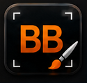
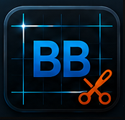
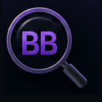
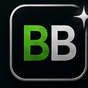
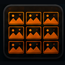
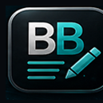

BBAYA VISUAL ASSET WORKSHOP
Create the visual language
behind your collection.
Six focused desktop tools for preparing icons, screenshots, contact sheets and reusable visual assets across BBaya.net, the Discogs Toolkit, reports, catalogs and marketplace software.
The graphics workshop behind BBaya. All images, favicons, banners, logos and graphics used on this website, in Discogs Toolkit and in IconLab itself are processed with IconLab. It comes with a huge collection of music-related icons, images and contact sheets.
Remove backgrounds and make icons transparent. Automatically cut contact sheets into individual images and save them, find visual duplicates, smart-rename your assets and perform many more useful actions.
Organize your reading collection, too. Manage PDF, CBR and CBZ files with built-in OCR to identify titles, authors and publishers for smarter renaming and better organization. Build collections, create contact sheets and keep your documents and comics organized.
PreciseFastAccurateReliableExport ready
ONE FAMILY · SIX SPECIALISTS
Not one overloaded editor.
Six clear jobs.
Each module concentrates on one stage of the asset workflow, while the same BBaya design language, folders and outputs keep the complete system coherent.
THE REAL PROGRAMS
Every module has its own workspace.
Every workspace belongs to IconLab.
The screenshots below are the actual supplied program screens.

01 · Single Image Editor
BBaya AlphaCut
Edit individual images with precision. Remove backgrounds, clean artifacts, refine edges, crop deliberately, and export transparent PNG icons.
- Background removal with tolerance control
- Crop, trim, zoom and edge cleanup
- Transparent PNG and sample-sheet export

02 · Icon Sheet Extractor
BBaya GridCut
Extract complete icon families from contact sheets. Detect grids, adjust guides, isolate cells, read labels, and export a clean batch.
- Automatic and manual grid detection
- Cell preview and exclusion controls
- Batch crop and named export

03 · Duplicate Finder
BBaya MatchScan
Find visually identical and near-identical images before they enter the asset library. Compare groups side by side and remove duplicates safely.
- Visual similarity scanning
- Side-by-side duplicate review
- Safe keep, move and delete decisions

04 · Website Icon Package
BBaya Favicon Creator
Turn one approved image into a complete website favicon package for browsers, Apple devices, Android devices, shortcuts, and manifests.
- ICO and multi-size PNG generation
- Apple and Android icon output
- Ready-to-copy website package

05 · Image Directory Review
BBaya Contact Sheet
Create polished contact sheets from any folder. Review an entire visual family at once and export high-resolution presentation sheets.
- Flexible columns, spacing and labels
- Black, white or custom presentation background
- High-resolution image export

06 · Intelligent File Renamer
BBaya Smart Rename
Rename files intelligently in large batches. Clean titles, normalize patterns, apply learned rules, inspect metadata, and preview every change first.
- Rule-driven and learned renaming
- Metadata-assisted cleanup
- Preview, conflict checks and safe batch apply
CONNECTED WORKFLOW
From a rough image
to a reusable BBaya asset.
The modules remain independent, but their outputs naturally feed the next stage. This makes IconLab useful as a complete production branch while keeping each individual program easy to understand.
- 01Clean
AlphaCut prepares the source image and transparency.
- 02Extract
GridCut separates icon families and exports cells.
- 03Compare
MatchScan identifies repeated or near-identical assets.
- 04Package
Favicon Creator builds complete website icon sets.
- 05Review
Contact Sheet presents the complete family together.
- 06Normalize
Smart Rename gives the approved library consistent names.
OUTPUT AND REVIEW
See what the modules produce.
Supporting screens and generated sample sheets from the supplied IconLab material.
BBAYA ICONLAB
Design it once.
Improve it when needed.
Reuse it everywhere.
IconLab gives the BBaya Design Bible a practical production workshop: real tools for creating, checking and maintaining the reusable assets behind every branch.
Return to the six modules →